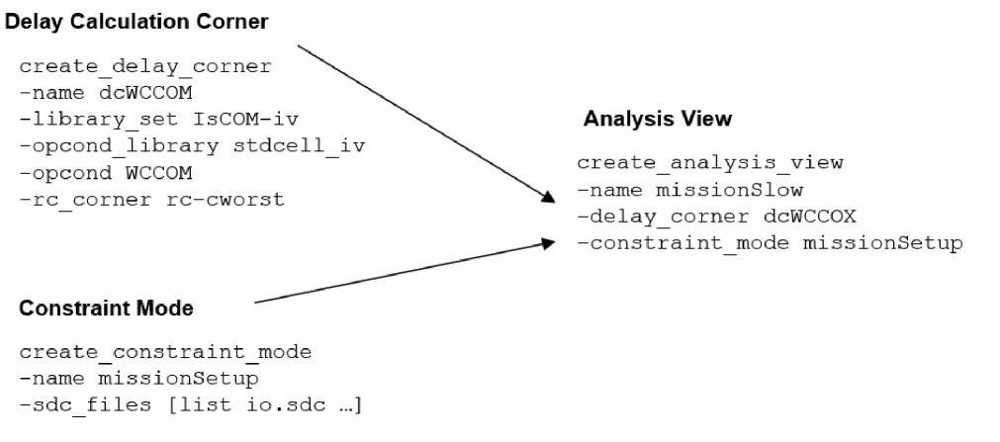

Analysis Views
- Creating Analysis Views
- Editing Analysis View Objects
- Setting Active Analysis Views
- Guidelines for Setting Active Analysis Views
Creating Analysis Views
An analysis view object provides all of the information necessary to control a given multi-mode multi-corner analysis. It consists of a delay calculation corner and a constraint mode.
To create an analysis view, use the following command:
The following figure shows the creation of the analysis view missionSetup:
Figure -5 Creation of New Analysis View

Editing Analysis View Objects
To change the attribute values for an existing analysis view, use the following command:
In the GUI mode, you can make changes to an analysis view using the Add Analysis View form:
Click the File tab and choose Configure MMMC. A new window opens, double-click on the Analysis Views tab and specify the constraint mode, delay corner, and analysis view. Click Apply and OK to save the settings.
Click Timing & SI tab and choose MMMC Browser. A new window opens, double-click on the Analysis Views tab and specify the constraint mode, delay corner, and analysis view. Click Apply and OK to save the settings.
update_analysis_view command or the Add Analysis View form before (or any time later) multi-mode multi-corner view definitions are loaded into the design. However, once the software is in multi-mode multi-corner analysis mode, any changes to an existing object in the timing, delay calculation, and RC data are reset for all the analysis views. Setting Active Analysis Views
After creating analysis views, you must set which views the software should use for setup and hold analysis. These "active" views represent the different design variations that will be analyzed. Active views can be changed throughout the flow to utilize different subsets of views. Libraries and data are loaded into the system, as required to support the selected set of active views.
To set active analysis views, use the following command:
For example, the following command sets missionSlow and mission2Slow as the active views for setup analysis, and missionFast and testFast as the active views for hold analysis:
set_analysis_view
-setup {missionSlow mission2Slow}
-hold {missionFast testFast}
Guidelines for Setting Active Analysis Views
The order in which you specify views, using the set_analysis_view command, is important. By default, the first view defined in the -setup and -hold lists is the default view.
Changing the Default Active Analysis View
For example, if the analysis view missionSlow is currently the default active setup view in the design, the following command temporarily changes the default view to mission2Slow:
set_default_view -setup mission2Slow
Checking the Multi-Mode Multi-Corner Configuration
Use the following command to generate a hierarchical report of your current multi-mode multi-corner configuration:
Return to top